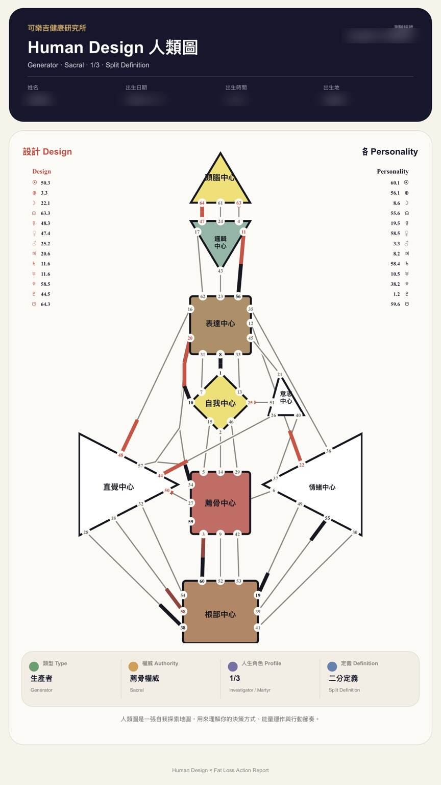
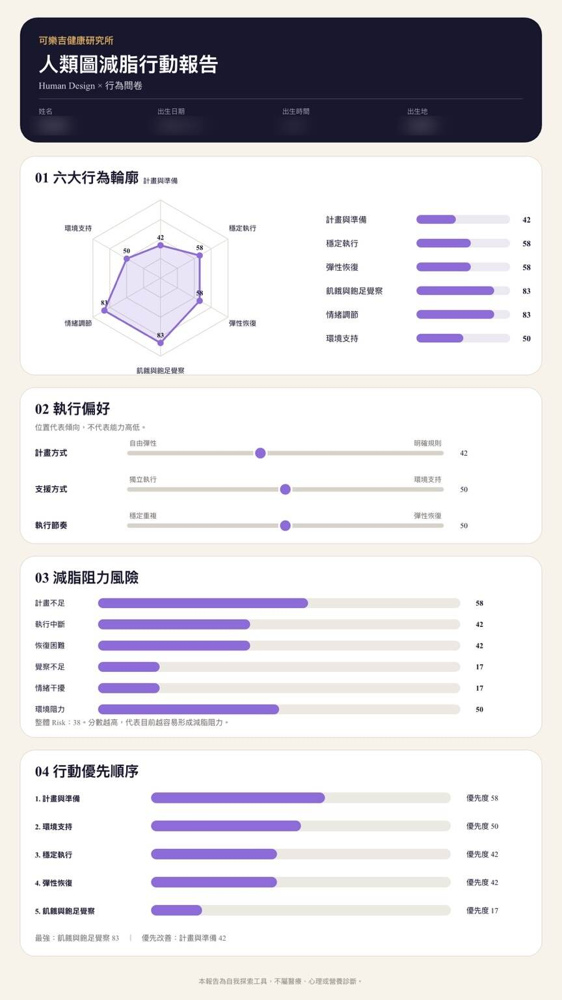

開始得很快，卻很難持續
前幾天很有動力，一忙或一累，整套計畫就停了。
HUMAN DESIGN × FAT-LOSS ACTION
結合人類圖與 8 題減脂行為測驗，從你的能量類型、決策方式與真實生活習慣，找出比較適合你的行動節奏。
測驗與約 30 分鐘解析皆完全免費，不需綁定付費方案。

DOES THIS SOUND LIKE YOU?
前幾天很有動力，一忙或一累，整套計畫就停了。
明明知道規則有用，但被限制久了就很想全部放棄。
方法換了一套又一套，卻不知道哪一個才適合自己。
一次聚餐或沒做到，就容易覺得前面的努力都白費了。
問題不一定只是自律。你可能還沒有找到適合自己的
啟動、決策與恢復節奏。

READ YOUR BLUEPRINT
人類圖提供一套觀察自己的語言。它不替你決定人生，而是幫助我們理解你在行動、決策與承受壓力時，可能比較自然的運作方式。
人類圖是一種自我探索工具，不是醫療診斷，也不會直接決定你該吃什麼或保證減脂成果。
THE DIFFERENCE
出生資料呈現你的人類圖結構，8 題問卷反映你此刻真實的生活狀態。兩邊放在一起，才看得見完整的你。
結構與目前行為方向一致，可能是你較自然、也較容易持續的模式。
已展現部分傾向，也可能受到環境、過往經驗或現階段壓力影響。
目前執行方式可能與自然節奏不同。這不是對錯，而是值得理解的線索。
WHAT YOU WILL DISCOVER
HOW IT WORKS
加入 Line 或 Facebook 私訊
出生資料與 8 題行為題
系統建立個人交叉分析
約 30 分鐘，一對一整理方向
完成測驗不代表必須購買任何服務。
WHY HUMAN INTERPRETATION
工作壓力、家庭安排與過去的減脂經驗，都可能讓人類圖結構與現在的行為呈現不同結果。
這份測驗不會只丟給你一張複雜圖表。崇銘老師會透過一對一對話，把結果放回你的生活，找出真正值得先調整的地方。
我不希望再用「你就是不夠自律」解釋每一次減脂失敗。
很多人不是不知道方法，而是那套方法很難融入他的生活。
MEET YOUR COACH
我是崇銘，一位專注於飲食執行與體態管理的一對一教練。這三年陪伴過上百位學員，我發現很多人不是不知道怎麼吃，而是現有方法沒有真正考慮他的工作節奏、壓力反應與生活狀態。
REAL STORIES
每個人需要調整的，不只是飲食規則，還有能夠長期走下去的生活節奏。
38 歲・室內設計師
「以前減重時，我都會安排非常嚴格的飲食計畫，只要有一餐沒做到，就覺得整天都失敗了。崇銘老師透過人類圖和我的生活狀況一起解析，發現我很容易為了達到標準而把自己逼得太緊，最後反而撐不久。
後來老師幫我改成比較有彈性的執行方式，保留自己做選擇的空間，也教我失誤後怎麼接回原本的節奏。這次沒有一直陷入『做不到就放棄』的循環，體態也終於開始穩定改變。」
45 歲・行政助理
「我以前總是看到別人用什麼方法有效，就跟著照做。一下子斷澱粉，一下子每天運動，但通常只能維持一兩個星期。
做完人類圖減脂測驗後，崇銘老師告訴我，我不適合突然大幅改變生活，而是需要先建立幾個能長期維持的小習慣。他陪我從早餐、喝水和外食選擇開始調整。雖然不是很激烈的方式，反而讓我第一次覺得減重可以自然地融入生活，也比較不容易復胖。」
28 歲・展場企劃
「我一直以為自己只是嘴饞，明明白天吃得很正常，晚上回家卻常常忍不住找東西吃。
解析時，崇銘老師不只看人類圖，也問了我工作壓力、睡眠和進食情境，才發現我很容易受到周遭情緒和環境影響，常常把吃東西當成放鬆的方法。老師沒有叫我硬忍，而是陪我重新安排晚上的飲食和紓壓方式。現在我比較能分辨自己是真的餓，還是只是累了，飲食也穩定很多。」
QUESTIONS & ANSWERS
是。測驗與約 30 分鐘的一對一解析都免費，也不需要綁定或購買付費方案。
可選擇線上視訊，或預約實體店面。實際時間會在完成測驗後與崇銘老師確認。
出生時間會影響人類圖計算。如果完全不知道或只有大概範圍，請先私訊告知，崇銘老師會說明可能的影響，再決定是否適合進行。
不是。測驗將人類圖作為自我探索工具，協助理解行動與決策傾向，不預測未來，也不構成醫療或營養診斷。
測驗重點是行動模式與需求分析，不會單憑人類圖決定你該吃什麼。若需要飲食建議，仍須結合實際健康狀況與生活條件評估。
報告包含人類圖、行為問卷與交叉分析，單看圖表容易誤解。完整內容會由崇銘老師在解析時放回你的真實生活說明。
資料僅用於產生人類圖、行為分析、安排解析與必要聯繫。詳情請閱讀隱私權政策。
不用。測驗與解析本身皆免費。只有當你主動希望得到進一步飲食執行指導與陪伴時，才會依需求說明可選擇的方式。
START FROM UNDERSTANDING
先看懂自己的節奏，也許就是改變真正開始的地方。
免費測驗・約 30 分鐘免費解析・不強制購買